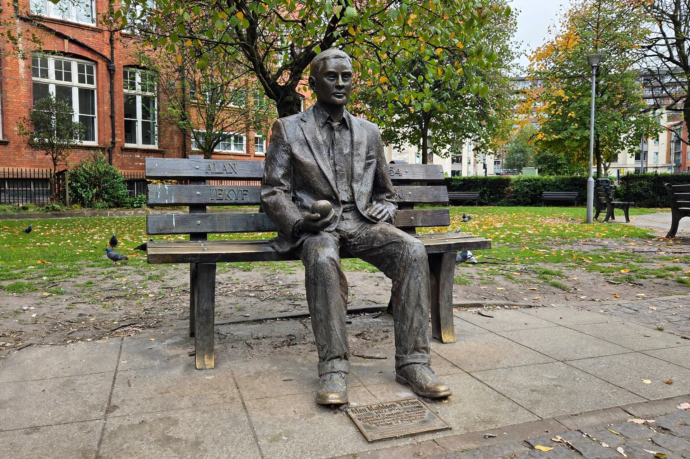

| ACM A. M. Turing Award | |
|---|---|
| Awarded for | Outstanding contributions to computer science |
| Presented by | Association for Computing Machinery (ACM) |
| First awarded | 1966 (to Alan Perlis) |
| Prize | US $1 million (sponsored by Google) |
| Named after | Alan Turing |
The ACM A. M. Turing Award is an annual prize given by the Association for Computing Machinery to individuals for contributions of lasting and major technical importance to computer science. It is generally recognized as the highest distinction in the field and is often referred to as the "Nobel Prize of Computing." Since 2014 the award has carried a prize of one million US dollars, sponsored by Google.
The award is named after Alan Turing, the British mathematician whose work laid the foundations of computer science. The first recipient, in 1966, was Alan J. Perlis, honored for his work on advanced programming techniques and compiler construction. Early laureates included Maurice Wilkes (1967), Richard Hamming (1968), Marvin Minsky (1969), Edsger W. Dijkstra (1972), Donald Knuth (1974), and John Backus (1977).
Well-known recipients include Ken Thompson and Dennis Ritchie (1983) for Unix and C; Tim Berners-Lee (2016) for the World Wide Web; and Geoffrey Hinton, Yann LeCun, and Yoshua Bengio (2018) for their work on deep neural networks. In 2006 Frances Allen became the first woman to receive the award. Recipients have been honored for work spanning programming languages, operating systems, databases, cryptography, complexity theory including NP-completeness, and artificial intelligence.
See also: Alan Turing, Association for Computing Machinery, List of Turing Award laureates